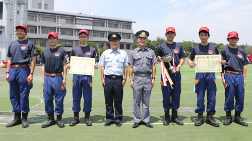
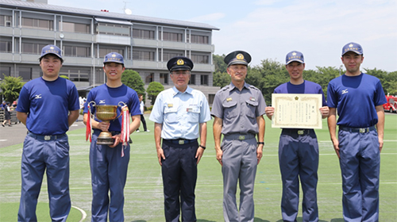

第27回 埼玉県消防協会埼玉西部支部消防操法大会
第27回 埼玉県消防協会埼玉西部支部消防操法大会
| 開催日時： | 平成28年7月3日（日曜日）午前8時から正午ごろまで（雨天決行） | |
| 会場： | 飯能日高消防署屋外訓練場(駐車場は飯能看護専門学校駐車場をご利用ください。会場までバスで送迎します。） | |
| お問合せ： | 飯能市役所危機管理室消防団担当/電話 （代表）042-973-2111（内線623） | |
| 消防操法の種別： | 第1部 小型ポンプ操法（6隊）／第2部 ポンプ車操法（6隊） | |
◆出場順位
| 小型ポンプの部（6隊） | ポンプ車の部（6隊） | ||
| 1 | 飯能消防団第3分団2部 | 1 | 日高市消防団第3分団 |
| 2 | 飯能消防団第3分団1部 | 2 | 飯能消防団第11分団 |
| 3 | 飯能消防団第5分団2部 | 3 | 飯能消防団第9分団 |
| 4 | 飯能消防団第11分団3部 | 4 | 日高市消防団第2分団 |
| 5 | 飯能消防団第4分団1部1班 | 5 | 日高市消防団第4分団 |
| 6 | 飯能消防団第10分団2部2班 | 6 | 飯能消防団第5分団 |
第27回 埼玉県消防協会埼玉西部支部消防操法大会 成績
| ポンプ車の部 |
|  ★優勝 日高市消防団第3分団 |
■最優秀選手賞
|
| 小型ポンプの部 |
|  ★優勝 飯能消防団第5分団2部 |
■最優秀選手賞
|
※なお、ポンプ車の部で優勝した日高市消防団第3分団、小型ポンプの部で優勝した飯能消防団第5分団2部は、来る8月20日（土）に埼玉県消防学校（鴻巣市）にて開催される第29回埼玉県消防操法大会に出場します。